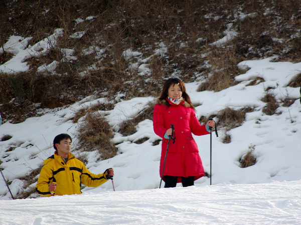

周六公司几个部门利用部门奖金组织一起去莲花山滑雪场活动，既然不用自己掏钱，那就二话不说的去呗。
说起来买的是周末全天不限时的门票，可是到雪场的路上就花了两个多小时（这里不得不一如既往的批评一下北京的交通拥堵情况），到了地方之后又是集合又是办手续又是领器材，全部弄妥当都已经11点了。此时大家伙直接无视雪鞋和雪板的沉重，呼啦一下就分散到了雪场的各个角落。
作为一个出生长大在南方平原的人，小跟班自然是没有滑过雪的。在折腾了两个小时摔了n(强调，n<=5)个跟头之后，终于能够完整的滑降完初级道了。于是小跟班很欣慰的回去补充完体力，就退掉雪具扛上相机重新杀奔雪场啦。
中级道上有一个超大的陡坡下来，这里摔的人多，摔法也各异，可是300mm的长焦在坡底下也是够不着的。为了更好的抓到别人摔倒的瞬间，小跟班同学发扬了大无畏的不怕死革命精神，公然违反雪场规定没穿雪鞋就爬到了雪道半中间，不过只咔嚓了几张就被工作人员给赶下来啦（其他同学要以小跟班同学为耻，不要学习啊）。下面这张就是在中级道上抓到的了：

红衣女：我也想冲下去，可是看着下面好多人摔跤，怕怕……
黄衣ws男：没关系，你继续怕怕，我继续看风景
回到雪场边，那也还是有素材可以拍的嘛，这不，眼尖的小跟班同学很快就发现了一个可爱的小loli：
来，把手套递给我，咱们出发吧
适应一下场地先

喂，我们要不要上去冲下来试试？
啥？你说笑吧
哎呀，要摔啦
摔跤也不怕，爬起来继续滑
当然，300mm的长焦也还是能够抓到雪坡上摔下来的人滴：

摔了也要踹你一下
想看更多照片？请围观小跟班的Flickr相册吧，地址在这里